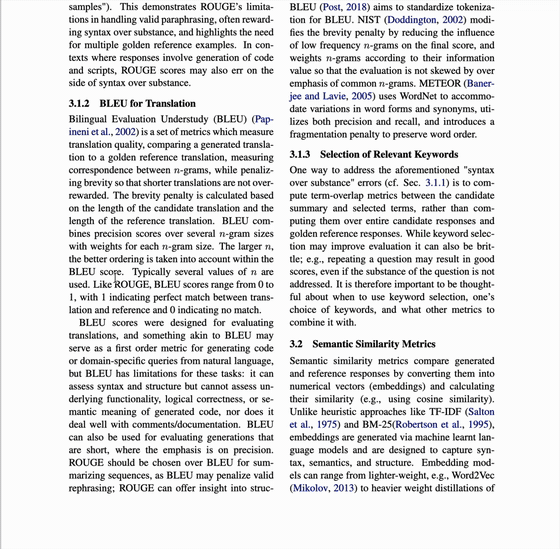

结合上下文解释
选中术语，根据你正在读的段落和章节给出解释。
记录保存在本机
每条解释都保存在你的浏览器里。没有 Harkback 服务器，也不需要账号。
再次遇到时想起
同一个术语再次出现，即使写法不同，也会显示你上次的理解。
模型由你自己选择：本机的 Ollama，或使用你自己的 API key 连接 OpenAI、Anthropic、Google Gemini、xAI Grok、OpenRouter 等服务。

选中术语，根据你正在读的段落和章节给出解释。
每条解释都保存在你的浏览器里。没有 Harkback 服务器，也不需要账号。
同一个术语再次出现，即使写法不同，也会显示你上次的理解。
模型由你自己选择：本机的 Ollama，或使用你自己的 API key 连接 OpenAI、Anthropic、Google Gemini、xAI Grok、OpenRouter 等服务。